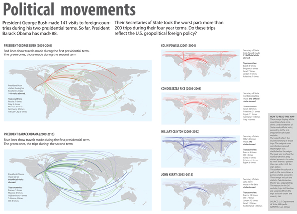

Political Movements
This project was part of a Geospatial Data Visualization course. There was no topic guides, but we need to chose between R and JavaScript to create our project.
I wanted to see where presidents George W. Bush and Barack Obama, and their secretaries of State, have travelled during their terms. I wondered whether there was a political pattern in those trips.
Software used: R, Illustrator